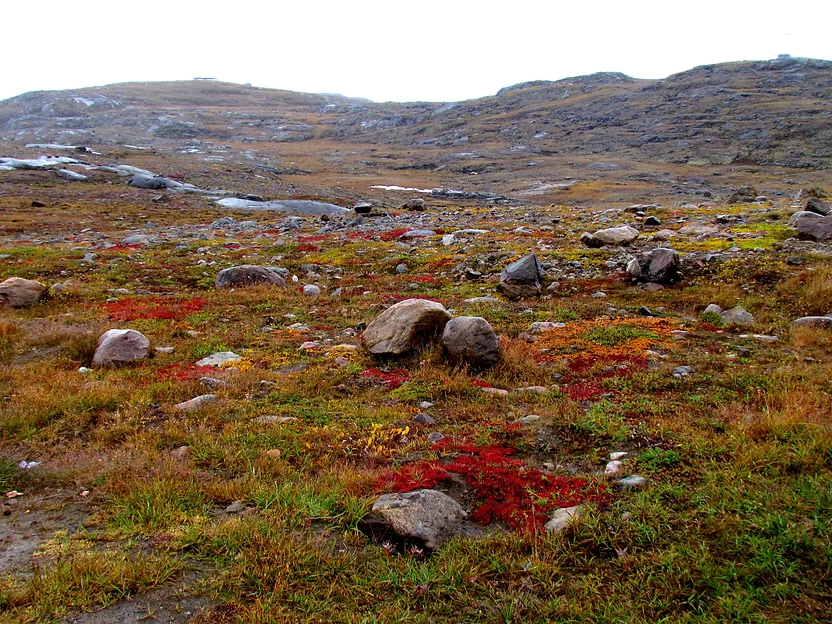
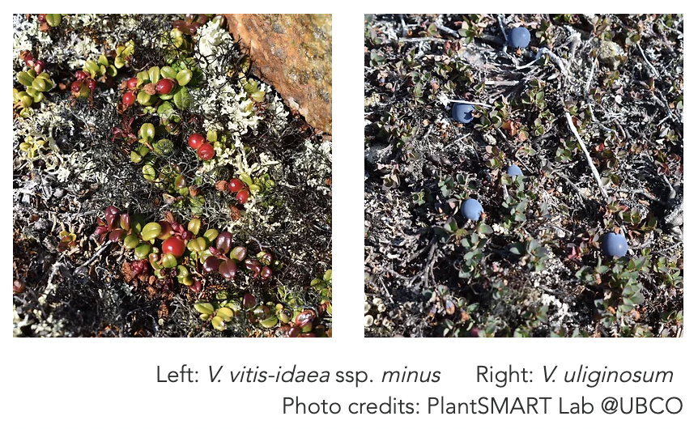

Next project ->
Climate change modelling of
Vaccinium species in North America
Canadian Arctic is experiencing climate change at twice the rate of global average.
Plants in this region are tolerant to harsh conditions of the Arctic.
On top of that, they are required to adapt to climate change more rapidly than others.
This provides an important study system to monitor the impact of fast-changing climate on Northern community.
"What lives in the Arctic?" was my first question as an international student coming from Asia who never thought Arctic was full of living organisms. I used to think that polar extremes are completely covered by ice sheets or barren with no sign of life. Despite harsh climate, Arctic flora represents the rich and dynamic biodiversity, with over 2,000 plant species thriving in Canadian Arctic Archipelago alone. Birch, willows, and many dwarf shrubs are some of the main inhabitants. Genus Vaccinium includes over 500 species of dwarf shrubs many of which produce edible berries. In the Arctic, two of Vaccinium species are found: lingonberry (V. vitis-idaea) and bog bilberry (V. uliginosum). They are important food source for Indigenous peoples and wild animals in the North, serving both cultural and ecological roles. My goal of this project was to predict how these important plant species will be affected by climate change using climate change modelling. The result will be useful to plan for the long-term management strategies in the Northern community.